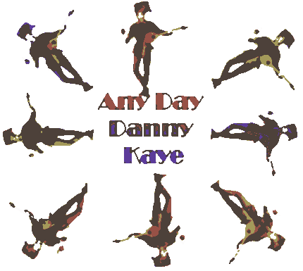

Films
on Disc Internet Magazine includes reviews and feature articles on laser discs, DVDs,
information on vintage movie posters and related links.


Front Cover
October/November 1998
In this issue....
Features

Click
on the image to read about Danny Kaye
DEPARTMENTS
DVD Reviews Evaluations of film
and disc quality
Laser Reviews Letter Ratings and in-depth
reviews
Feature Archive Features articles from John
Ford to Rome
Movie Posters: This month Danny Kaye
Links Laser DVD
Home Theater Film Posters
Poster Archive Recent Featured Posters
Masthead Who What Where Why When

Check out
Classic Movies with your host Brad Lang as an invaluable resource for movies and
entertainment on the Net. Brad's recent weekly feature articles have touched on
Streaming Video and tributes to actors from Glenn Ford to Roddy McDowell. The current
feature is a frightful list of classic horror movies. |